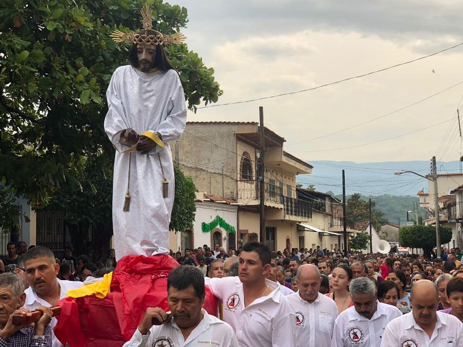
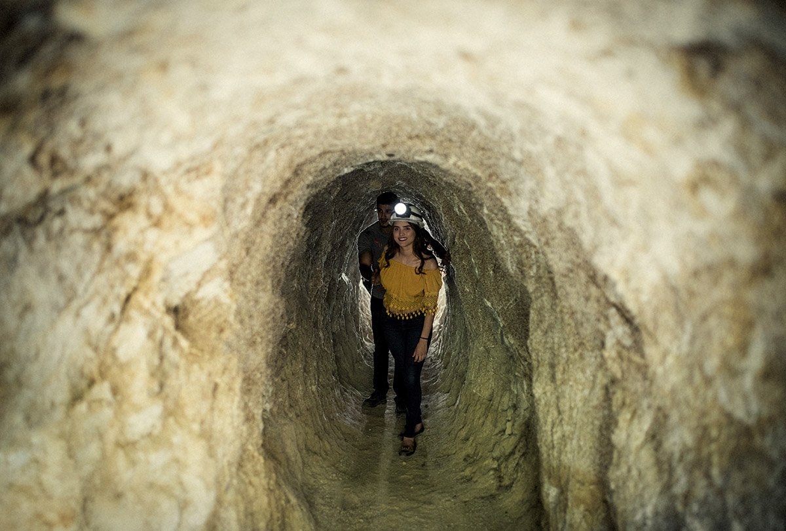

UBICACIÓN: Amatlán de Cañas se encuentra en el estado de Nayarit, México, específicamente en la región sur del estado. Está rodeado por la Sierra Madre Occidental, lo que le otorga un paisaje montañoso y pintoresco. Sus coordenadas geográficas son aproximadamente 20°48′N de latitud y 104°24′O de longitud. Limita al norte con los municipios de Ahuacatlán e Ixtlán del Río, al este y sur con el estado de Jalisco, y al oeste con el municipio de Ahuacatlán. Su altitud promedio es de 742 metros sobre el nivel del mar.
HISTORIA: Amatlán de Cañas tiene una historia rica que se remonta a la época prehispánica. Durante el periodo de la cultura Aztatlán (700 d.C. a 1524), los pueblos de esta región eran independientes, aunque cercanos al Señorío de Ahuacatlán y Etzatlán, en el actual estado de Jalisco. La región estaba habitada por los Coanos, una comunidad etnolingüística. En 1530, Nuño Beltrán de Guzmán y Fray Juan Padilla conquistaron la zona, iniciando la evangelización de los nativos. En 1620, misioneros franciscanos fundaron la población de Amatlán de Cañas como una encomienda minera, destacándose por la extracción de oro, plata y plomo, así como por la producción de caña de azúcar.
FIESTAS: Amatlán de Cañas celebra varias festividades importantes a lo largo del año. Una de las más destacadas es la fiesta en honor a San Antonio de Padua, que se lleva a cabo en junio. Durante esta celebración, se realizan procesiones, misas, danzas tradicionales y eventos culturales que atraen tanto a locales como a visitantes. Además, las festividades incluyen música en vivo, mariachis y una rica oferta gastronómica que refleja las tradiciones de la región.
PRODUCCIÓN: La economía de Amatlán de Cañas se basa principalmente en la agricultura, la ganadería y la minería artesanal. Entre los productos agrícolas más destacados se encuentran la caña de azúcar, el maíz, el frijol y el cacahuate. Además, la región es conocida por la producción de mezcal y artesanías de palma. La comunidad de El Rosario, dentro del municipio, es famosa por su producción artesanal de cacahuates y productos derivados, como mazapanes y cacahuates garapiñados.
